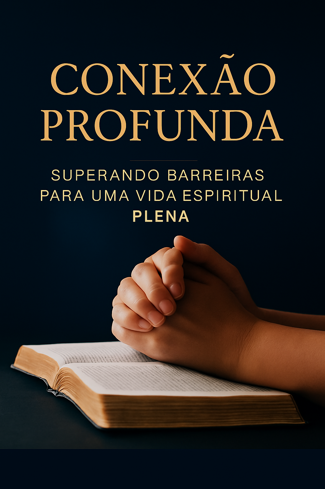

Você já se perguntou por que, mesmo após décadas de fé, ainda sente que algo está faltando em sua vida espiritual?
Descubra como superar as barreiras invisíveis que impedem uma conexão mais profunda com Deus e transforme sua caminhada cristã em uma jornada de intimidade genuína e propósito renovado.
Você se reconhece em alguma dessas situações?
- Sente que sua vida de oração se tornou mecânica e sem vida, mesmo orando há anos?
- Lê a Bíblia regularmente, mas raramente sente que ela "fala" com você como costumava falar?
- Participa ativamente de comunidades cristãs online, mas se sente espiritualmente vazio por dentro?
- Tem décadas de caminhada cristã, mas sente que estagnou espiritualmente?
- Luta para equilibrar sua fé digital com uma experiência autêntica de comunhão com Deus?
- Passa por períodos de "secura espiritual" e não sabe como atravessá-los?
- Deseja uma vida espiritual mais profunda, mas não sabe por onde começar a renovar sua fé?
Se você respondeu "sim" a pelo menos uma dessas perguntas, você não está sozinho. E mais importante: existe uma solução.
A Verdade Que Ninguém Fala Sobre a Vida Espiritual Madura
Depois de anos ou décadas caminhando com Cristo, muitos cristãos sinceros enfrentam um paradoxo doloroso: quanto mais tempo passam na fé, mais distantes de Deus se sentem.
- A era digital criou novas barreiras que nossos pais na fé nunca enfrentaram. Somos bombardeados por distrações constantes que fragmentam nossa atenção e dificultam a contemplação profunda.
- Práticas espirituais que funcionavam no passado podem ter se tornado rotineiras e perdido seu poder transformador, deixando-nos presos em uma "religiosidade automática".
- As redes sociais criaram uma "espiritualidade performática" onde compartilhamos mais sobre nossa fé do que realmente a vivemos em profundidade.
- Ninguém nos ensinou como adaptar nossa vida espiritual às mudanças naturais que vêm com a maturidade, limitações físicas e novas responsabilidades.
- Períodos de aridez espiritual são tratados como falhas pessoais em vez de partes normais e até necessárias da jornada de fé.
O resultado? Cristãos fiéis que se sentem culpados por sua "falta de fervor", confusos sobre por que Deus parece distante, e desesperançosos sobre a possibilidade de renovação espiritual.
Mas não precisa ser assim.
Apresentando "Conexão Profunda"
Um guia prático e transformador para cristãos maduros que desejam superar as barreiras invisíveis e redescobrir a intimidade genuína com Deus.
Este não é mais um livro de "dicas espirituais" superficiais. É um mapa detalhado, baseado em princípios bíblicos sólidos e sabedoria testada pelo tempo, que o guiará através de uma jornada de renovação espiritual autêntica.

O Que Você Descobrirá:
- Capítulo 1: Reconhecendo os Obstáculos da Vida Espiritual Moderna
Como a era digital está sabotando sua vida devocional (e o que fazer sobre isso); Os desafios específicos que cristãos de meia-idade e idade avançada enfrentam; Por que sua participação em comunidades online pode estar impedindo sua intimidade com Deus.
- Capítulo 2: Fundamentos Bíblicos para uma Vida Devocional Consistente
Princípios atemporais que sustentaram santos ao longo dos séculos; Como aplicar verdades antigas em seu contexto contemporâneo; Exemplos bíblicos de pessoas que mantiveram intimidade com Deus em todas as circunstâncias.
- Capítulo 3: Redescobrindo o Poder da Oração
Por que sua oração se tornou "seca" e como revitalizá-la; Diferentes formas de oração para diferentes momentos da vida; Como desenvolver uma linguagem de oração pessoal e autêntica.
- Capítulo 4: A Palavra Viva no Cotidiano
Como superar a leitura bíblica mecânica e sem propósito; Métodos de estudo adaptados para seu estilo de aprendizagem; Estratégias para aplicar a Palavra em situações concretas do dia a dia.
- Capítulo 5: Cultivando Disciplinas Espirituais na Maturidade
Como adaptar práticas espirituais para limitações físicas ou de tempo; O valor das disciplinas clássicas no mundo contemporâneo; Abordagens equilibradas para jejum e outras disciplinas corporais.
- Capítulo 6: Da Comunidade Virtual para a Comunhão Autêntica
Como equilibrar participação digital e presencial na igreja; Estratégias para construir relacionamentos que realmente nutrem sua fé; Como ser sal e luz nas plataformas digitais sem perder a autenticidade.
- Capítulo 7: Superando Crises de Fé e Períodos de Aridez Espiritual
Por que os "desertos espirituais" são normais e até necessários; Estratégias comprovadas para atravessar períodos de dúvida e desânimo; Como encontrar propósito e renovação após as crises.
- Capítulo 8: Plano de Ação para uma Vida Espiritual Renovada
Avaliação pessoal: onde você está e onde quer chegar; Como estabelecer metas espirituais realistas e mensuráveis; Criando rotinas sustentáveis que se adaptam à sua vida atual.
O Que Você Ganhará Com Este E-book:
- CLAREZA ESPIRITUAL
Finalmente entenda por que sua vida espiritual estagnou e tenha um caminho claro para a renovação.
- PRÁTICAS TRANSFORMADORAS
Descubra disciplinas espirituais adaptadas para sua realidade atual, não para um ideal impossível.
- RELACIONAMENTO AUTÊNTICO COM DEUS
Saia da "religiosidade automática" e entre em uma intimidade genuína e vibrante com o Senhor.
- EQUILÍBRIO DIGITAL SAUDÁVEL
Aprenda a usar a tecnologia para fortalecer sua fé, não para enfraquecê-la.
- RESILIÊNCIA ESPIRITUAL
Desenvolva a capacidade de manter sua fé forte mesmo em períodos de dificuldade e aridez.
- PROPÓSITO RENOVADO
Redescubra seu chamado e como sua maturidade espiritual pode impactar outros.
- COMUNIDADE SIGNIFICATIVA
Construa relacionamentos que realmente nutrem e desafiam sua fé.
- PLANO PERSONALIZADO
Saia da leitura com um plano de ação concreto e adaptado à sua situação específica.
Por Que Este E-book é Diferente?
- BASEADO EM FUNDAMENTOS BÍBLICOS SÓLIDOS
Cada princípio e prática é fundamentado na Escritura, não em modismos espirituais passageiros.
- FOCADO NO SEU PÚBLICO ESPECÍFICO
Criado especificamente para cristãos de meia-idade e idade avançada, considerando seus desafios únicos.
- PRÁTICO E APLICÁVEL
Não são apenas teorias, mas estratégias testadas que você pode implementar imediatamente.
- HONESTO SOBRE AS DIFICULDADES
Não promete soluções mágicas, mas oferece caminhos reais para crescimento genuíno.
- EQUILIBRADO E MADURO
Evita extremos e oferece uma abordagem equilibrada para a vida espiritual.
Por Que Agir Agora?
- Cada dia que passa sem renovação espiritual é um dia perdido de intimidade mais profunda com Deus.
- Quanto mais você adia, mais difícil fica quebrar padrões espirituais estagnados.
- Sua família e comunidade precisam do exemplo de uma fé vibrante e autêntica.
- Deus tem propósitos específicos para esta estação de sua vida que você pode estar perdendo.
- O tempo é o recurso mais precioso que você tem - invista-o em seu crescimento espiritual.
Sua Transformação Espiritual Começa Hoje
De: R$ 97,00
Por apenas: R$ 47,00
O Que Está Incluído:
- 📚 E-book "Conexão Profunda" (PDF)
8 capítulos completos, Mais de 200 páginas de conteúdo transformador, Exercícios práticos ao final de cada capítulo, Plano de ação personalizado.
- 🎁 Bônus #1: Guia de Oração para 30 Dias (Valor: R$ 27)
Um guia prático com diferentes métodos de oração para renovar sua vida de oração em apenas um mês.
- 🎁 Bônus #2: Planos de Leitura Bíblica Adaptáveis (Valor: R$ 19)
Três planos diferentes de leitura bíblica que se adaptam à sua rotina e estilo de vida.
- 🎁 Bônus #3: Lista de Recursos Espirituais Recomendados (Valor: R$ 15)
Uma curadoria de livros, aplicativos, podcasts e recursos online para apoiar sua jornada espiritual.
VALOR TOTAL: R$ 158
SEU INVESTIMENTO HOJE: APENAS R$ 47
🛡️
Garantia Incondicional de 30 Dias
Estamos tão confiantes de que "Conexão Profunda" transformará sua vida espiritual que oferecemos uma garantia total de 30 dias.
Se por qualquer motivo você não ficar completamente satisfeito com o conteúdo, basta enviar um e-mail e devolvemos 100% do seu investimento, sem perguntas.
Você não tem nada a perder e uma vida espiritual renovada a ganhar.
Sua Jornada de Renovação Espiritual Começa Agora
Não deixe que mais um dia passe vivendo uma fé medíocre.
Não permita que as barreiras invisíveis continuem impedindo sua intimidade com Deus.
Não aceite que sua melhor época espiritual já passou.
Sua renovação espiritual está a apenas um clique de distância.
🔥 OFERTA ESPECIAL - APENAS POR TEMPO LIMITADO 🔥
CLIQUE NO BOTÃO ABAIXO E GARANTA SEU ACESSO IMEDIATO
- Acesso imediato após a compra
- Download em PDF para ler em qualquer dispositivo
- Garantia incondicional de 30 dias
- Todos os bônus inclusos
Perguntas Frequentes
P: Este e-book é adequado para minha denominação?
R: Sim! O conteúdo é baseado em princípios bíblicos universais que se aplicam a todas as denominações cristãs. Evitamos questões doutrinárias controversas e focamos no que une todos os cristãos: o desejo de conhecer a Deus mais profundamente.
P: Preciso de conhecimento teológico avançado para entender?
R: Não! O e-book foi escrito em linguagem acessível para cristãos de todos os níveis de conhecimento bíblico. Explicamos conceitos quando necessário e focamos na aplicação prática.
P: Quanto tempo preciso dedicar para ver resultados?
R: Muitos leitores relatam insights significativos já na primeira leitura. No entanto, a transformação espiritual é um processo. Recomendamos dedicar pelo menos 15-20 minutos diários às práticas sugeridas para ver mudanças duradouras.
P: E se eu tiver limitações físicas ou de saúde?
R: O e-book inclui adaptações específicas para pessoas com limitações físicas, problemas de mobilidade ou condições de saúde. Todas as práticas podem ser modificadas conforme suas necessidades.
P: Como recebo o e-book após a compra?
R: Imediatamente após a confirmação do pagamento, você receberá um e-mail com o link para download do e-book em PDF e todos os bônus.
P: A garantia é real?
R: Absolutamente! Oferecemos 30 dias de garantia incondicional. Se não ficar satisfeito por qualquer motivo, devolvemos 100% do seu investimento.
⚠️ ATENÇÃO: Esta Oferta Especial é Por Tempo Limitado
O preço promocional de R$ 47 (em vez de R$ 97) é válido apenas para os primeiros 100 exemplares.
Após isso, o e-book retornará ao preço normal.
Não perca esta oportunidade de transformar sua vida espiritual com um investimento mínimo.
Sua Decisão Determinará os Próximos Anos da Sua Vida Espiritual
Você pode continuar como está:
- Sentindo-se espiritualmente estagnado
- Lutando com práticas devocionais sem vida
- Questionando se sua melhor época espiritual já passou
- Perdendo oportunidades de intimidade genuína com Deus
A escolha é sua. O momento é agora.
QUERO TRANSFORMAR MINHA VIDA ESPIRITUAL - R$ 47
"Porque eu sei os planos que tenho para vocês", diz o Senhor, "planos de fazê-los prosperar e não de causar dano, planos de dar a vocês esperança e um futuro." - Jeremias 29:11
Deus tem planos de renovação para sua vida espiritual. Este e-book pode ser o primeiro passo para descobri-los.